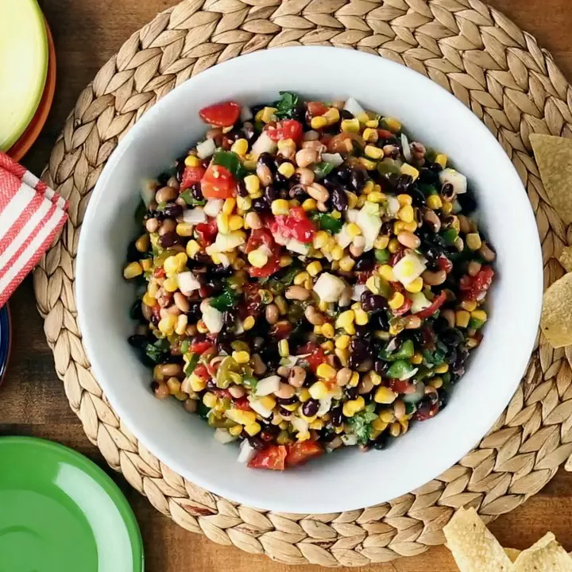

Cowboy Caviar Recipe

Description
Cowboy caviar is a quick, refreshing dish made with black-eyed peas and other pantry staples you're sure to have on hand.
Ingredients
- Canned veggies
- Frozen corn
- Fresh vegies and herbs
- Picked jalapenos
- Garlic salt
- Salad dressing
Steps
- Gather all ingredients.
- Mix black beans, black-eyed peas, diced tomatoes, corn, onion, bell pepper, and jalapeño peppers together in a large bowl.
- Season with garlic salt, then pour in Italian salad dressing and add cilantro. Mix until well coated.
- Refrigerate until flavors have melded, at least 20 minutes or up to 3 days, before serving.